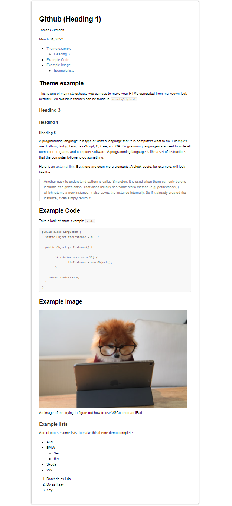
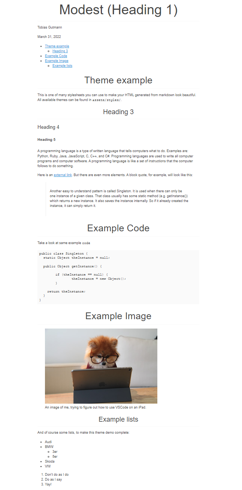

March 30, 2022
Have you ever just wanted to write something and not think about formatting? This project will help! While there are many online editors for markdown, I don’t want to rely on an online connection to simple put down some notes.
If you, like me, just want something that renders your markdown to beautiful HTML, reloads your browser on any changes and includes a table of contents at the top of your document, you can finally rest easy. Follow the instructions laid out for you in the Getting started section. Then, proceed to Customizing to learn how you can change the styling and more.
While you can easily extend and customize this repo to fit your needs, these features are provided for you out of the box:


git clone git@github.com:Karl-Heinrich/markdown-to-html.gitDebian / Ubuntu / Kubuntu etc.
sudo apt install pandocmacOS
brew install pandocFor detailed instructions, visit pandoc.org
Either go to the extensions menu and install the recommended extensions for this workspace or you can run the following commands:
code --install-extension emeraldwalk.RunOnSave
code --install-extension ritwickdey.LiveServerNext, start the live server by hitting the button on the lower right corner of VSCode, which in the following screenshot is highlighted by a red rectangle.

This will start a server on localhost:5500 if that port is available. Navigate to localhost:5500/dist/about.md.html to take a look at this document in your browser.
That’s it, you’re done! By default, every file you create inside the src/ folder will be rendered to HTML and is available in the dist/ folder. Open the file in your browser with live server running and you should see you changes being updated once you save.
The themes are located in assets/styles as *.css files. You can add your own or use one of the existing stylesheets. To change the theme, navigate to script/render.sh and search for this line
pandoc --toc "$file" -s -o ../dist/"$file".html --css ../assets/styles/retro.cssAt the end of the command, the stylesheet to use is declared. If you want to change it to another theme, simply change the path at the end where it says retro.css. E.g. to switch to the github.css theme file, replace the above line with the following:
pandoc --toc "$file" -s -o ../dist/"$file".html --css ../assets/styles/github.cssCurrently available themes are:
github.css
modest.css
retro.cssTo remove the table of contents, navigate to script.render.sh and delete the command option --toc from this line
pandoc --toc "$file" -s -o ../dist/"$file".html --css ../assets/styles/retro.css